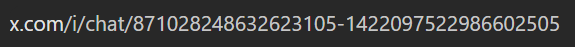
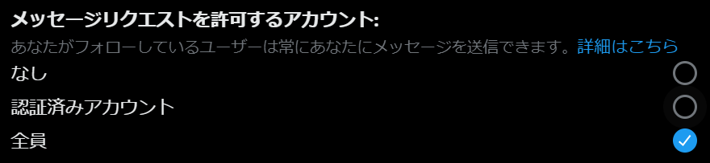

送信対象としたいアカウントの数値IDを指定して、XのDM作成リンクを生成します。
プロフィールやサイトなどに設置することで、クリックした人が指定されたアカウント宛のDM画面を直接開けるようになります。
※2026/5/16現在、PC環境からはDMのテキスト自動入力が動作しない場合があります。（スマホアプリからは正常に動作します）
生成形式: https://x.com/messages/compose?recipient_id=...&text=...


このページでは安全のため、確認チェックを入れないとDMリンクを作成できません。
※本機能の利用は自己責任でお願いします。